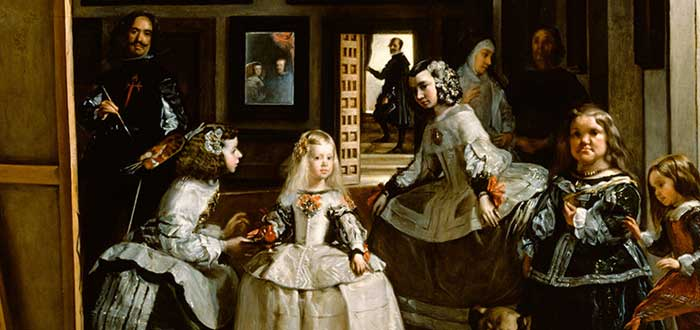

A un lado aparece la niña Margarita con su servidumbre, mientras que sus padres, el rey Felipe IV y Mariana, aparecen el el espejo del fondo como si ellos mirasen la pintura desde nuestro lugar y en el fondo tenemos a José, el ayudante de la reina. Se dice que el pintor español buscaba colocar al espectador en el lugar de los reyes y acercarlo a la cotidianidad de la realeza.
Las meninas
